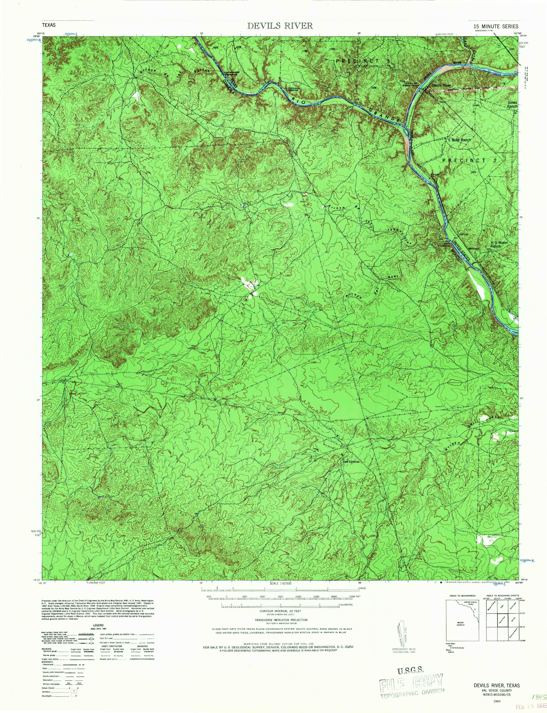
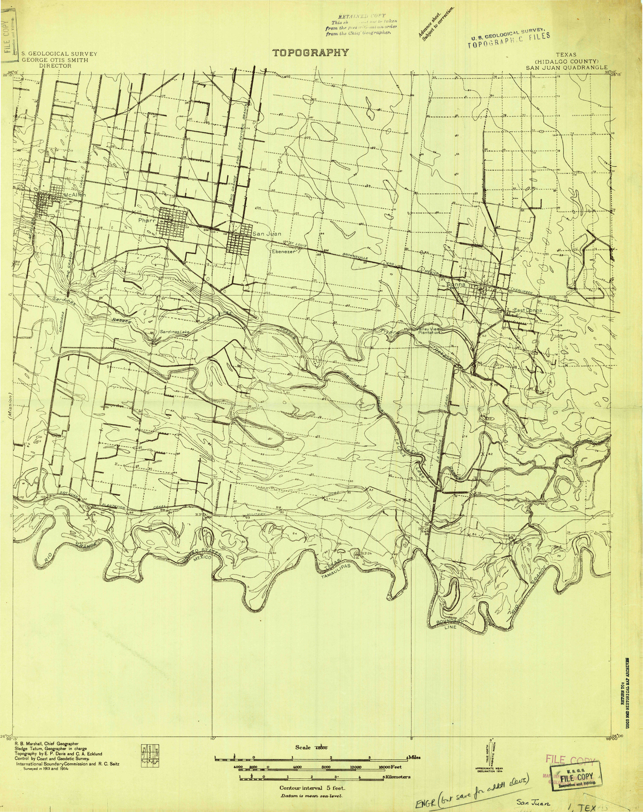

| FILE NAME | YEAR/DATE | AREA | SOURCE/URL | TRACED BY | RIVER TRACING FILE | |
|---|---|---|---|---|---|---|
| Area 1 | ||||||
 |
Relative positions of Rio Grande near El Paso between 1852 and 1907 | 1852 1889 1899 1907 |
1 | IBC | Patrick O'Shea | (geojson):1852 (geojson):1889 (geojson):1899 (geojson):1907 |
 |
TX_Fort Hancock_123977_1894_125000_geo | 1894 | 1 | USGS | Chris Taylor | GEOJSON |
 |
TX_El Paso_123946_1896_125000_geo.tif | 1896 | 1 | USGS | Daniel Rios | |
 |
TX_Eagle Mountain_123925_1897_125000_geo | 1897 | 1 | USGS | Alex | |
 |
TX_El Paso_123948_1908_125000_geo | 1908 | 1 | USGS | andres Armendariz | GEOJSON |
 |
TX_Eagle Mountain_123927_1916_125000_geo | 1916 | 1 | USGS | Chris Taylor | GEOJSON |
 |
NM_Canutillo_189980_62500 | 1917 | 1 | USGS | Daniel | |
| TX_Ysleta_117325_1939_62500_geo | 1939 | 1 | USGS | Daniel Rios | GEOJSON | |
| TX_Clint_108727_1941_62500_geo | 1941 | 1 | USGS | Chris Taylor | GEOJSON | |
 |
TX_El Paso_107852_1941_31680_geo | 1941 | 1 | USGS | Adrian | |
| TX_Tornillo_116675_1941_62500_geo | 1941 | 1 | USGS | Amber Noyola | ||
| TX_Ysleta_117326_1941_62500_geo | 1941 | 1 | USGS | Caitlin Ford | ||
| TX_Fort Hancock_108227_1943_62500_geo | 1943 | 1 | USGS | Andres Armendariz | ||
| TX_Fort Quitman_108241_1943_62500_geo | 1943 | 1 | USGS | Amber Noyola | ||
| TX_McNary_109668_1943_62500_geo | 1943 | 1 | USGS | Amber Noyola | ||
| TX_Ysleta_117327_1945_62500_geo | 1945 | 1 | USGS | Caitlin Ford | ||
 |
TX_El Paso_107853_1948_24000_geo | 1948 | 1 | USGS | Maria | |
 |
TX_El Paso_107860_1953_250000_geo | 1953 | 1 | USGS | Daniel Rios | GEOJSON |
| TX_Van Horn_116854_1954_250000_geo | 1954 | 1 | USGS | Daniel Rios | ||
| TX_Clint_108729_1955_24000_geo | 1955 | 1 | USGS | aa | ||
 |
TX_El Paso_107857_1955_24000_geo | 1955 | 1 | USGS | Maria | |
| TX_San Elizario_111331_1955_24000_geo | 1955 | 1 | USGS | aa | ||
| TX_Smeltertown_121447_1955_24000_geo.tif | 1955 | 1 | USGS | Daniel Rios | ||
| TX_Ysleta_117330_1955_24000_geo | 1955 | 1 | USGS | Daniel Rios | ||
| TX_El Paso_107863_1959_250000_geo | 1959 | 1 | USGS | andres Armendariz | ||
| TX_El Paso_107859_1964_250000_geo | 1964 | 1 | USGS | Landon Wade | ||
| TX_El Paso_107862_1965_250000_geo | 1965 | 1 | USGS | Daniel Rios | ||
| TX_Acala_106119_1972_24000_geo | 1972 | 1 | USGS | Daniel Rios | GEOJSON | |
| TX_Esperanza_107975_1972_24000_geo | 1972 | 1 | USGS | Daniel | ||
| TX_Fort Hancock NW_108224_1972_24000_geo | 1972 | 1 | USGS | Joe Bondi | ||
| TX_Fort Hancock_108228_1972_24000_geo | 1972 | 1 | USGS | Joe Bondi | ||
| TX_Isla_111033_1972_24000_geo | 1972 | 1 | USGS | Maria | ||
| TX_McNary_109670_1972_24000_geo | 1972 | 1 | USGS | Maria | ||
| TX_Tornillo_116679_1972_24000_geo | 1972 | 1 | USGS | Maria | ||
| TX_El Paso_107864_1983_1000000_geo.tif | 1983 | 1 | USGS | Daniel Rios | GEOJSON | |
| TX_Indian Hot Springs_117893_1984_100000_geo | 1984 | 1 | USGS | Bryan Brummett | ||
| TX_Mount Livermore_118229_1985_100000_geo | 1985 | 1 | USGS | Amber Noyola | ||
| TX_Tornillo_123513_1985_100000_geo | 1985 | 1 | USGS | Alex | ||
| TX_Ysleta NW_123668_1990_24000_geo | 1990 | 1 | USGS | Stephanie Enriquez | - | |
| TX_El Paso_122302_1994_24000_geo | 1994 | 1 | USGS | Maria | ||
| TX_Ysleta NW_123669_1994_24000_geo | 1994 | 1 | USGS | Daniel Rios | ||
| TX_Smeltertown_124080_1996_24000_geo | 1996 | 1 | USGS | Daniel Rios | ||
| Area 4 | ||||||
| TX_Feely_108056_1941_62500_geo | 1941 | 4 | USGS | Chris Taylor | GEOJSON | |
|  | TX_Devils River_109223_1943_62500_geo | 1943 | 4 | USGS | Landon Wade | |
| TX_Langtry_110291_1943_62500_geo | 1943 | 4 | USGS | Mia Zaro | ||
| TX_Devils Lake_109222_1944_62500_geo | 1944 | 4 | USGS | AnaGM | ||
| TX_Devils River_109226_1944_62500_geo | 1944 | 4 | USGS | Haley Cooper | ||
| TX_Mouth Of Pecos_111228_1944_62500_geo | 1944 | 4 | USGS | Bryan Brummett | ||
| TX_Sycamore Ranch_122510_1944_62500_geo | 1944 | 4 | USGS | Amber Noyola | ||
| TX_Del Rio_109171_1958_250000_geo | 1958 | 4 | USGS | Stephanie Enriquez | GEOJSON | |
| TX_Del Rio_109173_1964_250000_geo | 1964 | 4 | USGS | AnaGM | GEOJSON | |
| TX_Amistad Dam_105672_1972_24000_geo | 1972 | 4 | USGS | AnaGM | GEOJSON | |
| TX_Box Canyon_105940_1972_24000_geo | 1972 | 4 | USGS | AnaGM | ||
| TX_California Creek_105408_1972_24000_geo | 1972 | 4 | USGS | Chris Taylor | ||
| TX_Del Rio NW_109166_1972_24000_geo | 1972 | 4 | USGS | AnaGM | ||
| TX_Del Rio SW_109168_1972_24000_geo | 1972 | 4 | USGS | Grace Shanks | ||
| TX_Gillis Ranch_108465_1972_24000_geo | 1972 | 4 | USGS | AnaGM | ||
| TX_Rough Canyon_116492_1972_24000_geo | 1972 | 4 | USGS | AnaGM | ||
| TX_Satan Canyon_111470_1972_24000_geo | 1972 | 4 | USGS | AnaGM | ||
| TX_Seminole Canyon_121308_1972_24000_geo | 1972 | 4 | USGS | Chris Taylor | ||
| TX_Zuberbueler Bend NW_117349_1972_24000_geo | 1972 | 4 | USGS | AnaGM | ||
| TX_Zuberbueler Bend_117350_1972_24000_geo | 1972 | 4 | USGS | AnaGM | ||
| TX_Shafter Canyon_124039_1983_24000_geo | 1983 | 4 | USGS | Mia Zaro | GEOJSON | |
| TX_Shumla_121780_1943_62500_geo | 1983 | 4 | USGS | Stephanie Enriquez | ||
| TX_Amistad Village_121955_1985_100000_geo | 1985 | 4 | USGS | Chris Taylor | ||
| TX_Camp Wood_122060_1985_100000_geo | 1985 | 4 | USGS | AnaGM | ||
| TX_Comstock_122155_1985_100000_geo | 1985 | 4 | USGS | AnaGM | ||
| TX_Del Rio_122240_1986_100000_geo | 1986 | 4 | USGS | Alex | ||
| Area 6 | ||||||
|  | TX_SanJuan_128360_1914_48000_geo_tif | 1914 | 6 | USGS | PCO | GEOJSON |
| TX_La Paloma_128247_1929_24000_geo | 1929 | 6 | USGS | Caitlin Ford | GEOJSON | |
| TX_Mouth of Rio Grande_128698_1929_24000_geo | 1929 | 6 | USGS | Caitlin Ford | ||
| TX_Santa Maria_128258_1929_24000_geo | 1929 | 6 | USGS | Caitlin Ford | ||
| TX_Barreda_123747_1930_24000_geo | 1930 | 6 | USGS | Chris Taylor | ||
| TX_East Brownsville_123930_1930_24000_geo | 1930 | 6 | USGS | Landon Wade & Chris Taylor | ||
| TX_Palmito Hill_128252_1929_24000_geo | 1930 | 6 | USGS | Landon Wade | ||
| TX_Southmost_128274_1930_24000_geo | 1930 | 6 | USGS | Caitlin Ford | ||
| TX_West Brownsville_137598_1930_24000_geo | 1930 | 6 | USGS | PCO | ||
| Santa Maria | 1936 | 6 | USGS | |||
| TX_Barreda_105737_1936_31680_geo | 1936 | 6 | USGS | Stephanie Enriquez | ||
| TX_East Brownsville_107779_1936_31680_geo | 1936 | 6 | USGS | Chris Taylor | ||
| TX_La Paloma_110129_1936_31680_geo | 1936 | 6 | USGS | Landon Wade | ||
| TX_Mouth Of Rio Grande_111229_1936_31680_geo | 1936 | 6 | USGS | Caitlin Ford | ||
| TX_Palmito Hill_116192_1936_31680_geo | 1936 | 6 | USGS | Caitlin Ford | ||
| TX_Southmost_121763_1936_31680_geo | 1936 | 6 | USGS | Caitlin Ford | ||
| TX_West Brownsville_117054_1936_31680_geo | 1936 | 6 | USGS | AnaGM | ||
| Olmito | 1945 | 6 | USGS | GEOJSON | ||
| TX_McAllen_707467_1954_250000_geo | 1954 | 6 | USGS | PCO | GEOJSON | |
| TX_East Brownsville_107782_1955_24000_geo | 1955 | 6 | USGS | Landon Wade | ||
| TX_Mouth Of Rio Grande_111233_1955_24000_geo | 1955 | 6 | USGS | Landon Wade | ||
| TX_Palmito Hill_116197_1955_24000_geo | 1955 | 6 | USGS | Bryan Brummett | ||
| TX_Southmost_121556_1955_24000_geo | 1955 | 6 | USGS | Landon Wade | ||
| TX_La Paloma_110132_1956_24000_geo | 1956 | 6 | USGS | Landon Wade | ||
| TX_Olmito_116051_1956_24000_geo | 1956 | 6 | USGS | Landon Wade | ||
| TX_Progreso_115025_1956_24000_geo | 1956 | 6 | USGS | Bryan Brummett | ||
| TX_Santa Maria_111430_1956_24000_geo | 1956 | 6 | USGS | Alden Anderson | ||
| TX_West Brownsville_117056_1956_24000_geo | 1956 | 6 | USGS | bryan brummett | ||
| TX_Las Milpas_110314_1962_24000_geo | 1962 | 6 | USGS | bryan brummett | GEOJSON | |
| TX_McAllen_707468_1962_250000_geo | 1962 | 6 | USGS | AnaGM | ||
| TX_San Juan SE_111348_1962_24000_geo | 1962 | 6 | USGS | Bryan Brummett | ||
| TX_Hidalgo_110740_1963_24000_geo | 1963 | 6 | USGS | Lia Forslund | ||
| TX_Mission_109810_1963_24000_geo | 1963 | 6 | USGS | bryan brummett | ||
| TX_Los Ebanos_109352_1965_24000_geo | 1965 | 6 | USGS | bryan brummett | ||
| TX_East Brownsville_122284_1983_24000_geo | 1983 | 6 | USGS | Bryan Brummett | GEOJSON | |
| TX_Hidalgo_110741_1983_24000_geo | 1983 | 6 | bryan brummett | |||
| TX_Las Milpas_110315_1983_24000_geo | 1983 | 6 | Landon Wade | |||
| TX_Mission_109810_1983_24000_geo | 1983 | 6 | Bryan Brummett | |||
| TX_West Brownsville_117058_1983_24000_geo | 1983 | 6 | USGS | Bryan Brummett | ||
| TX_Brownsville_122009_1992_100000_geo | 1992 | 6 | USGS | Franek Wardynski | ||
| TX_Harlingen_117797_1992_100000_geo | 1992 | 6 | USGS | Stephanie Enriquez | ||
| TX_Mc Allen_118139_1992_100000_geo | 1992 | 6 | USGS | Lia Forslund | ||
| TX_Hidalgo_117835_2002_24000_geo | 2002 | 6 | USGS | Bryan Brummett | GEOJSON | |
| TX_La Paloma_117966_2002_24000_geo | 2002 | 6 | USGS | Bryan Brummett | ||
| TX_Las Milpas_118010_2002_24000_geo | 2002 | 6 | USGS | Bryan Brummett | ||
| TX_Los Ebanos NW_118070_2002_24000_geo | 2002 | 6 | USGS | Bryan Brummett | ||
| TX_Los Ebanos_118071_2002_24000_geo | 2002 | 6 | USGS | Bryan Brummett | ||
| TX_Mission_118198_2002_24000_geo | 2002 | 6 | USGS | Bryan Brummett | ||
| TX_Progreso_117546_2002_24000_geo | 2002 | 6 | USGS | Bryan Brummett | ||
| TX_San Juan SE_117682_2002_24000_geo | 2002 | 6 | USGS | Bryan Brummett | ||
| TX_Santa Maria_124009_2002_24000_geo | 2002 | 6 | USGS | Bryan Brummett |